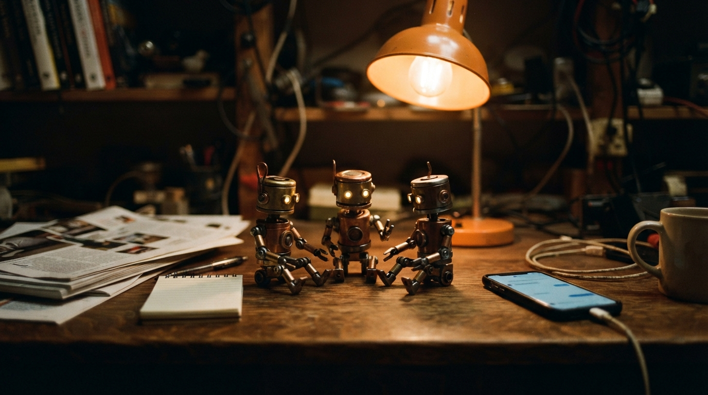

Creo varios. Se hablan. Yo doy el ok.
Los botsse hablan

xAI · early beta. x.ai/botx.ai/news/introducing-grok-bot
Creo varios. Se hablan. Yo doy el ok.
Grok Bot salió el 11 de agosto, todavía en prueba (beta). x.ai/bot No lo uso como un chat más. Lo uso así: creo varios bots (compañeros de trabajo). Uno busca. Otro escribe. Otro revisa. Se conectan entre ellos. Se hablan. Se pasan el trabajo. Deciden. Vuelven a intentar. Mejoran. Yo no estoy en cada ida y vuelta. Yo doy el ok. Sin mi ok, no sale.
Yo lo uso para armar Wavys. La revista. Los textos. El día. A veces falla. Lo sigo usando. Porque cuando el trabajo deja de vivir solo en mi cabeza, el lunes ya no empieza desde cero.
Ellos se hablan. Yo doy el ok.